Belajar Robotika & IOT
Materi Lengkap — Muwatok Project
Daftar Isi Lengkap
BAB I — Pengenalan
BAB II — Elektronika Dasar
3 Bab • 20+ Sub-bab
Dilengkapi analogi, contoh, dan kode
BAB I Pengenalan Robotika & IOT
🤖 Apa Itu Robotika?
Robotika adalah ilmu yang mempelajari tentang desain (perancangan), konstruksi (pembuatan), operasi (pengoperasian), dan aplikasi (penggunaan) robot.
Mengapa Robotika Penting? Di tahun 2025, robot sudah menggantikan banyak pekerjaan manusia, terutama yang:
- Berbahaya — seperti menjinakkan bom atau menjelajah gunung berapi.
- Berulang-ulang — seperti memasang sekrup di pabrik sepanjang hari.
- Membutuhkan presisi tinggi — seperti operasi bedah mikro atau merakit chip komputer.
🌐 Apa Itu IOT (Internet of Things)?
IOT adalah singkatan dari Internet of Things — atau dalam bahasa Indonesia: "Internet untuk Segala Benda".
IOT adalah sistem yang memungkinkan benda-benda di sekitar kita (seperti sensor, lampu, kulkas) terhubung ke internet dan saling bertukar data tanpa campur tangan manusia.
Perbedaan Robotika dan IOT:
- Robotika lebih menekankan pada benda fisik (robot yang bergerak).
- IOT lebih menekankan pada data yang dikirim jarak jauh.
Ketiganya akan kita pelajari secara mendalam!
A. Mekanikal — "Tulang dan Otot" Robot
Mekanikal adalah semua aspek fisik pada robot: gerak, struktur, keseimbangan, dan komponen-komponen mekanis.
🔩 Tiga Komponen Utama Sistem Mekanikal
- Joint (Sendi) — titik sambung yang memungkinkan gerakan antar bagian robot. Contoh: siku pada lengan robot.
- Link (Penghubung) — bagian keras yang menghubungkan satu joint dengan joint lainnya. Contoh: tulang lengan atas.
- End-Effector — bagian ujung robot yang berinteraksi langsung dengan objek kerja. Contoh: gripper (penjepit), spray gun (penyemprot cat), atau alat las.
🏗️ Struktur Berdasarkan Jenis Robot
Robot Manipulator (Lengan)
- Base — dasar/tumpuan, bisa berputar horizontal.
- Shoulder (Bahu) — sendi untuk mengangkat lengan.
- Elbow (Siku) — sendi untuk menekuk lengan.
- Wrist (Pergelangan) — sendi untuk orientasi end-effector.
- End-Effector — alat di ujung lengan.
Robot Mobile (Bergerak)
- Chassis (Rangka) — kerangka dasar tempat semua komponen dipasang.
- Sistem Penggerak — roda, track (ulat), atau kaki.
- Suspensi — sistem peredam getaran untuk kestabilan.
📐 Arsitektur Robot
- Serial Robot: link-link tersusun secara seri dari base ke end-effector (seperti lengan manusia).
- Parallel Robot: beberapa link paralel menghubungkan base dengan end-effector (lebih stabil, seperti meja angkat).
⚡ Komponen Mekanikal Utama
- Aktuator (Penggerak): "otot" robot. Mengubah energi (listrik, angin, atau tekanan cairan) menjadi gerakan.
- Motor Servo: presisi tinggi, bisa dikontrol posisinya (misal 0°–180°). Contoh: Micro Servo SG90 untuk robot mini.
- Motor DC: motor umum yang bisa berputar dua arah (CW/CCW).
- Linear Aktuator: mengubah putaran menjadi gerakan lurus (seperti dorongan).
- Sistem Transmisi: menyalurkan daya dari motor ke bagian yang digerakkan. Jenis: Gear (roda gigi), Belt (sabuk), Chain (rantai), Tendon (kabel), Direct Drive (langsung).
- Reduksi Gear: memperlambat putaran motor tapi menambah tenaga (torsi). Contoh: gearbox 4:1 pada gripper robot.
📊 Prinsip Mekanika dalam Robotika
- Kinematika: mempelajari gerakan tanpa mempedulikan gaya. Ada Kinematika Maju (menentukan posisi dari sudut joint) dan Kinematika Balik (menentukan sudut joint dari posisi yang diinginkan).
- Statika: mempelajari keseimbangan gaya saat robot diam atau bergerak konstan.
- Dinamika: mempelajari gerakan dengan memperhatikan gaya, percepatan, inersia, dan gravitasi.
- Perencanaan Trajektori: menentukan jalur gerak robot dari titik A ke B dengan batasan kecepatan dan percepatan.
⚖️ Keseimbangan dan Stabilitas
- Keseimbangan Statis: pusat massa robot tetap di posisinya saat bergerak.
- Kompensasi Gravitasi: menggunakan pegas atau pemberat untuk menyeimbangkan beban gravitasi pada lengan robot.
- Keseimbangan Dinamis: penting untuk robot berjalan (kaki), agar tidak jatuh saat melangkah.
🧱 Material dan Manufaktur
Material yang umum digunakan: Aluminium (ringan & kuat), Baja (kuat & tahan lama), Plastik ABS/Nylon, Komposit serat karbon, dan material cetak 3D (PLA, PETG, ABS).
Metode manufaktur: CNC Machining (presisi tinggi), 3D Printing (prototipe), Injection Molding (produksi massal), Sheet Metal Fabrication (rangka).
🛠️ Desain Mekanikal Robot
Proses desain: Identifikasi kebutuhan → Konseptualisasi → Analisis → Detail desain → Prototyping → Iterasi (perbaikan).
Software desain: Creo Parametric, SolidWorks, AutoCAD, Fusion 360.
Pertimbangan desain: Range of Motion (rentang gerak), Payload (beban angkat), Repeatability (ketepatan ulang), Kecepatan, Keandalan, dan Keamanan.
📌 Aplikasi Mekanikal pada Jenis Robot
- Robot Industri (Manipulator): 6-DOF, angkat beban berat, presisi tinggi.
- Robot Mobile: Roda Mecanum (gerak omnidirectional), Track (medan berat), Kaki (adaptasi medan ekstrem).
- Robot Humanoid: meniru tubuh manusia dengan sendi kompleks dan sistem keseimbangan canggih.
- Drone: rangka ringan, baling-baling, dan mekanisme kontrol sikap.
🧹 Perawatan Mekanikal
- Pelumasan pada gear, bearing, dan komponen bergerak.
- Pembersihan dari debu dan kontaminan.
- Inspeksi keausan dan kerusakan.
- Kalibrasi presisi gerakan.
- Penggantian komponen aus (belt, gear, bearing).
B. Elektronika — "Sistem Saraf" Robot
Elektronika adalah ilmu yang mempelajari tentang listrik DC (arus searah), yang memiliki kutub positif (+) dan negatif (-). Robotika sangat bergantung pada elektronika karena semua sensor, motor, dan mikrokontroler bekerja dengan listrik.
📊 Analog vs Digital
- Analog: nilai yang kontinu (berkelanjutan) antara dua titik. Contoh: volume radio yang bisa diputar halus. Dalam elektronika, rentang nilai analog biasanya 0–225 (atau 0–1023 pada ADC 10-bit).
- Digital: hanya memiliki dua nilai: 0 (mati/LOW) atau 1 (hidup/HIGH). Seperti saklar lampu — hanya on atau off.
⚡ Tiga Besaran Fundamental Listrik
| Besaran | Satuan | Analogi Air | Contoh |
|---|---|---|---|
| Tegangan (V) | Volt (V) | Tekanan air / ketinggian | Baterai 9V, adaptor 5V |
| Arus (I) | Ampere (A) | Debit air / jumlah aliran | Motor 2A, LED 20mA |
| Hambatan (R) | Ohm (Ω) | Penyempitan pipa / gesekan | Resistor 220Ω |
📐 Hukum Ohm (Rumus Dasar)
V = I × R — Tegangan = Arus × Hambatan.
Contoh di Robotika: Motor DC memiliki hambatan 2Ω dan diberi tegangan 12V. Maka arus yang mengalir adalah I = 12V / 2Ω = 6 Ampere. Ini penting untuk memilih driver motor yang kuat agar tidak overheat.
⚡ Hukum Daya (Power Law)
P = V × I — Daya (Watt) = Tegangan × Arus.
Contoh: Motor menarik 2A pada 12V → daya = 24 Watt. Ini membantu kita memilih baterai yang cukup besar.
🔌 Rangkaian Penting dalam Robotika
- Pembagi Tegangan (Voltage Divider): Dua resistor seri untuk menurunkan tegangan. Rumus: V_out = V_in × (R2 / (R1 + R2)). Berguna untuk membaca sensor resistif (misal LDR).
- Filter Kapasitor (Decoupling): Kapasitor 0.1µF dipasang dekat pin VCC-GND IC untuk menyaring noise listrik dan mencegah reset mendadak.
- Rangkaian H-Bridge: 4 transistor untuk mengontrol arah motor DC (maju, mundur, berhenti). IC populer: L298N dan L293D.
C. Pemrograman — "Otak dan Jiwa" Robot
Pemrograman adalah proses menulis, menguji, memperbaiki (debugging), dan memelihara kode. Fungsi pemrograman dalam robotika adalah memberi instruksi logis ke mikrokontroler agar komponen elektronika bekerja sesuai harapan.
Proses Kerja Program:
- Menulis kode (C/C++ di Arduino IDE).
- Kompilasi — kode diubah menjadi bilangan biner (0 dan 1) yang dimengerti mikrokontroler.
- Upload — kode biner dikirim ke memori Flash mikrokontroler via USB.
- Eksekusi — mikrokontroler membaca instruksi dan mengirim sinyal ke motor/LED/sensor.
🧩 6 Pilar Dasar Pemrograman Robotika
- Logika & Algoritma: Urutan langkah logis untuk menyelesaikan masalah. Contoh: "Jika jarak sensor < 10 cm, motor mundur; jika tidak, motor maju."
- Struktur Bahasa (Syntax): Variabel, tipe data (int, float, char, boolean), konstanta, dan operator (+, -, *, /, ==, <, >).
- Kontrol Alur: Percabangan (if/else) dan perulangan (for/while).
- Fungsi & Modularisasi:
setup()(sekali) danloop()(terus menerus) pada Arduino. - Interaksi Hardware: Digital I/O (HIGH/LOW), Analog I/O (ADC), PWM, dan Serial.
- Komunikasi Protokol: UART, I2C, dan SPI untuk menghubungkan banyak perangkat.
🐍 Bahasa Pemrograman yang Umum
- C / C++: utama untuk Arduino, ESP32, STM32.
- Python: untuk robotika tingkat tinggi (AI, Computer Vision).
- MicroPython: versi ringan Python untuk ESP8266/ESP32.
- Blockly / Scratch: visual programming untuk pemula.
🐛 Debugging (Mencari Kesalahan)
- Serial Monitor: melihat data real-time dari robot ke komputer.
- LED Indikator: menandakan bagian kode yang berhasil dijalankan.
- Hardware Debugger: menjalankan kode step-by-step.
BAB II Dasar Elektronika
Elektronika dasar adalah cabang ilmu yang mempelajari komponen dan prinsip kerja rangkaian elektronika, dari komponen pasif hingga aktif. Konsep dasarnya: arus listrik, tegangan, hambatan, resistor, transistor, kapasitor, dan dioda.
1. Arus Listrik dan Tegangan
Arus dan tegangan adalah dua sisi mata uang dalam elektronika. Tanpa tegangan, arus tidak mengalir. Tanpa arus, tegangan hanya potensi diam.
- Tegangan (Volt) = tekanan air / ketinggian. Semakin tinggi tekanan, semakin deras dorongan.
- Arus (Ampere) = debit air (liter per detik). Semakin besar arus, semakin banyak elektron mengalir.
- Hambatan (Ohm) = penyempitan pipa / gesekan.
DC vs AC:
- DC (Direct Current / Arus Searah): mengalir satu arah, konstan. Sumber: baterai, adaptor. Ini yang digunakan di semua robot!
- AC (Alternating Current / Arus Bolak-balik): arus membalik arah secara periodik (50 Hz di Indonesia). Sumber: listrik PLN. Harus diubah ke DC untuk robot.
- Polaritas Terbalik: Periksa (+) dan (-) sebelum colok! IC bisa rusak permanen jika terbalik.
- Korsleting (Short Circuit): Jangan biarkan kabel (+) menyentuh (-) langsung — bisa panas, meleleh, atau terbakar!
- Arus Berlebih: Pastikan baterai/adaptor cukup kuat. Jika motor butuh 2A tapi adaptor cuma 1A, robot bisa mati mendadak (brownout).
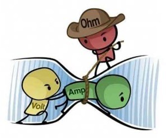
Ilustrasi hubungan antara Volt, Ampere, dan Ohm.
2. Power Supply (Catu Daya)
Catu daya adalah rangkaian yang mengubah AC (dari stopkontak) menjadi DC yang dibutuhkan robot.
🔌 Komponen Utama: Transformator (Trafo)
- Berdasarkan bentuk: Kotak (model lama, berat, berisik) dan Toroidal (berbentuk donat, ringan, efisien).
- Berdasarkan kutub: Non-CT (2 kabel: positif & negatif) dan CT (Center Tap) (3 kabel: +V, 0, -V) untuk tegangan simetris.
- Berdasarkan cara kerja: Step-Down (menurunkan tegangan, misal 220V → 12V) — ini yang paling umum! Dan Step-Up (menaikkan tegangan).
Trafo bekerja dengan lilitan kawat — lilitan primary (input) dan secondary (output). Perbandingan lilitan menentukan step-up atau step-down.
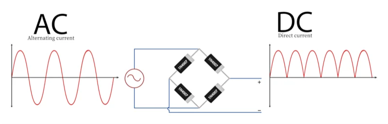
Penyearah AC ke DC menggunakan Dioda Bridge.
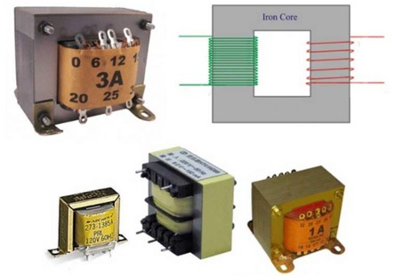
Berbagai jenis Transformator.
3. Rectifier (Dioda)
Dioda adalah komponen yang berfungsi sebagai penyearah arus AC menjadi DC. Dioda hanya mengalirkan arus satu arah: dari Anoda (+) ke Katoda (-).
Penurunan Tegangan (Voltage Drop): Saat arus melewati dioda, terjadi penurunan tegangan sekitar 0.6–0.7V (untuk dioda silikon).
Fungsi penting di robotika: Flyback Diode — dipasang paralel terbalik pada motor/relay untuk melindungi dari lonjakan tegangan balik (back EMF) yang bisa merusak komponen.
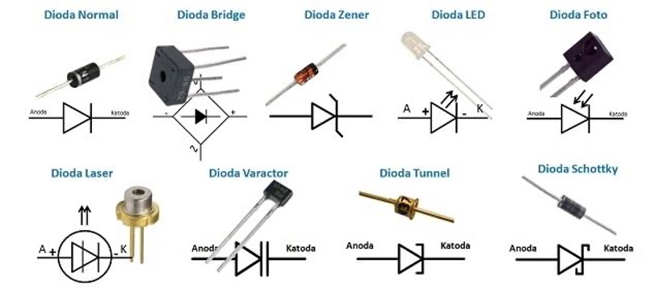
Jenis-jenis Dioda (Normal, Bridge, Zener, LED, Foto, dll).
4. Kapasitor
Kapasitor berfungsi sebagai penyimpan muatan listrik sementara dan filter sinyal.
- Kapasitor Polar (Elektrolit): memiliki (+) dan (-). Jika terbalik, bisa meledak! Kapasitansi besar (1µF – 10.000µF).
- Kapasitor Non-Polar (Keramik): tidak punya polaritas, bisa dipasang bolak-balik. Kapasitansi kecil (1pF – 10µF).
Fungsi kapasitor di robotika:
- Filter/Smoothing: meratakan tegangan DC hasil penyearah (misal 2200µF).
- Decoupling/Bypass: menyaring noise frekuensi tinggi — kapasitor 0.1µF di dekat IC.
- Snubber: meredam lonjakan pada motor.
- Timer: rangkaian waktu dengan resistor (RC).
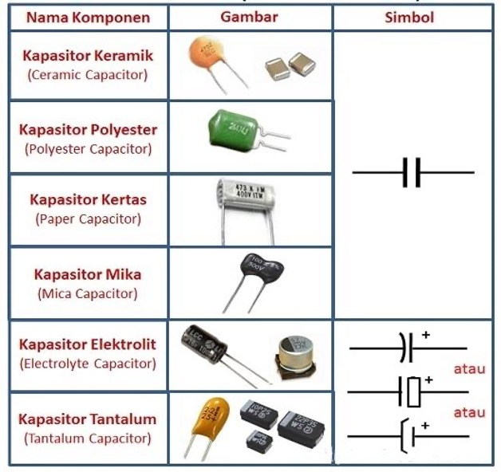
Macam-macam Kapasitor (Keramik, Polyester, Elektrolit, dll).
5. Resistor
Resistor adalah komponen untuk menghambat, membatasi, atau mengatur arus listrik. Sifatnya non-polar — bisa dipasang bolak-balik. Satuan: Ohm (Ω).
🎨 Kode Warna Resistor
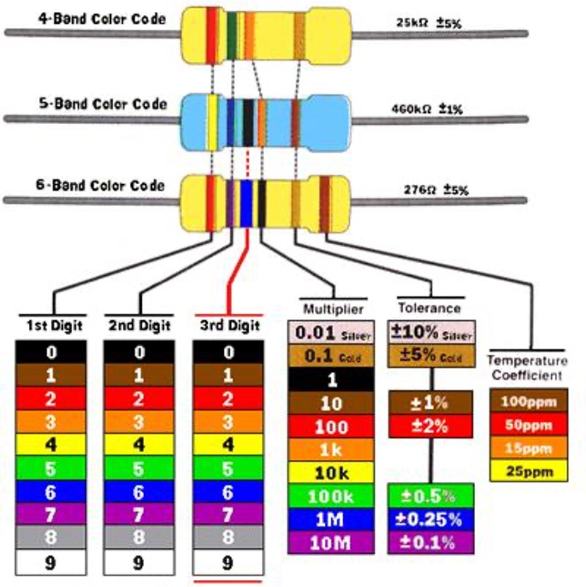
Tabel panduan membaca gelang warna resistor 4, 5, dan 6 gelang.
📟 Resistor SMD (3 Digit)
101= 10 × 10¹ = 100Ω203= 20 × 10³ = 20.000Ω = 20kΩ472= 47 × 10² = 4.700Ω = 4.7kΩ4R7= 4.7Ω (R = desimal)
📟 Resistor SMD (4 Digit)
Pada sistem pengkodean 4 digit, aturannya sedikit berbeda. Tiga digit pertama menunjukkan nilai resistansi, sedangkan digit keempat (terakhir) adalah faktor pengali (10 pangkat digit keempat).
1002= 100 × 10² = 10.000Ω = 10kΩ4701= 470 × 10¹ = 4.700Ω = 4.7kΩ4753= 475 × 10³ = 475.000Ω = 475kΩ4R70= 4.70Ω (Tanda "R" berfungsi sebagai koma desimal pada resistor SMD 4 digit)R047= 0.047Ω
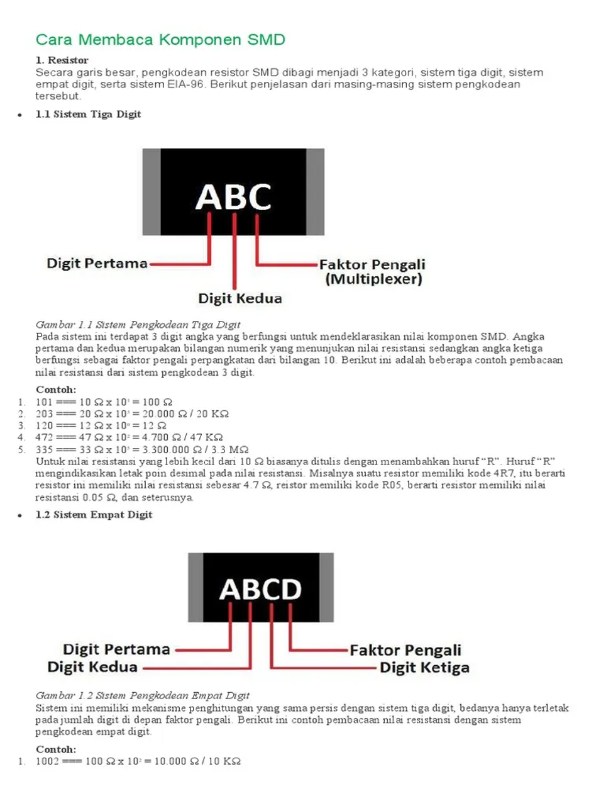
Cara membaca kode resistor SMD 3 dan 4 digit.
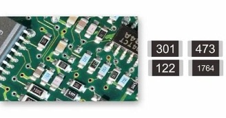
Contoh fisik Resistor SMD.
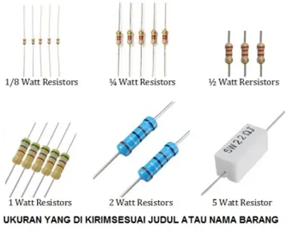
Resistor berdasarkan kemampuan daya (Watt).
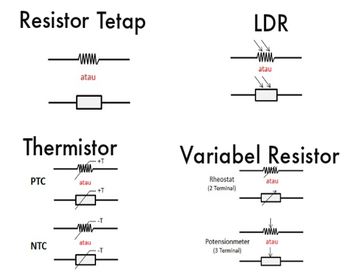
Simbol resistor tetap, LDR, Termistor (PTC/NTC), dan Variabel.
6. Transistor
Transistor adalah komponen semikonduktor yang berfungsi sebagai penguat sinyal atau sakelar digital. Memiliki 3 pin: Basis (B), Kolektor (C), Emitor (E).
- NPN: Arus mengalir dari Kolektor ke Emitor jika Basis diberi tegangan positif (>0.7V).
- PNP: Arus mengalir dari Emitor ke Kolektor jika Basis diberi tegangan negatif.
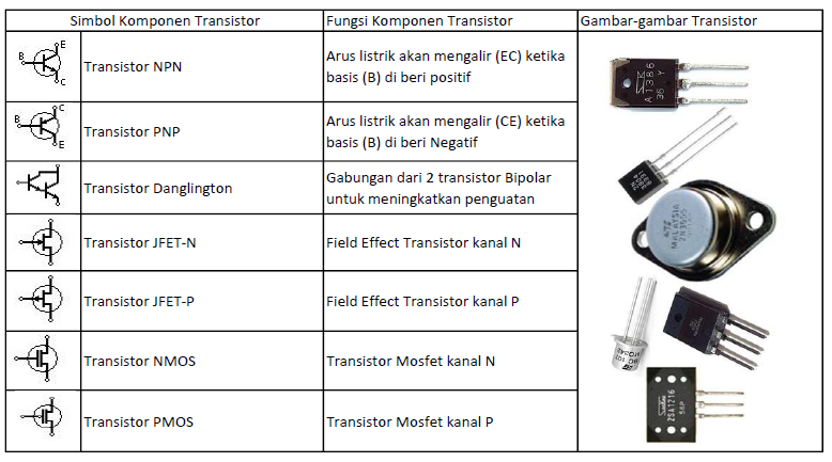
Simbol dan jenis transistor NPN, PNP, Darlington, JFET, dan MOSFET.
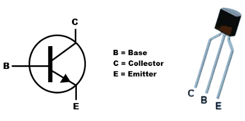
Struktur pin transistor NPN (Base, Collector, Emitter).
7. IC (Integrated Circuit) & Mikrokontroler
IC (Integrated Circuit) adalah chip yang berisi ribuan hingga jutaan komponen (transistor, resistor, kapasitor) dalam satu kemasan kecil. Contoh: mikrokontroler, op-amp, regulator.
🧠 Mikrokontroler
Mikrokontroler adalah komputer kecil dalam satu chip yang bisa diprogram untuk mengontrol tugas-tugas tertentu. Perbedaan dengan IC biasa: mikrokontroler bisa diprogram!
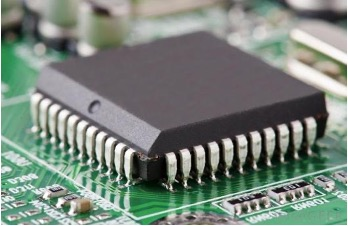
Komponen IC / Chip.
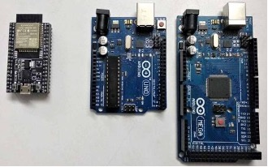
Mikrokontroler (ESP32, Arduino Uno, Arduino Mega).
📊 Perbandingan Arduino Uno, ESP8266, ESP32
| Fitur | Arduino Uno | ESP8266 | ESP32 |
|---|---|---|---|
| CPU | ATMega328 | Single-core Xtensa LX106 | Dual-core Xtensa LX6 |
| Clock Speed | 16 MHz | 80/160 MHz | 160/240 MHz |
| Wi-Fi | ❌ | ✅ 802.11 b/g/n | ✅ 802.11 b/g/n |
| Bluetooth | ❌ | ❌ | ✅ 4.2 & BLE |
| GPIO | 14 | 17 | 36 |
| Analog Pin | 6 (10-bit) | 1 (10-bit) | 18 (12-bit) |
| Tegangan | 5V | 3.3V | 3.3V |
| RAM | 2 KB | 160 KB | 520 KB |
| Flash | 32 KB | 4 MB | 4–16 MB |
8. Motor dan Penggerak (Actuator) Dasar
Dalam robotika, motor adalah komponen yang mengubah energi listrik menjadi energi gerak (mekanik). Mereka adalah "otot" dari robot. Ada tiga jenis motor yang sangat umum digunakan dalam proyek robotika: Motor DC, Motor Servo, dan Motor Stepper. Untuk mengendalikannya dari mikrokontroler, kita membutuhkan Driver Motor.
⚙️ A. Motor DC (Untuk Roda Robot)
Motor DC adalah jenis motor yang paling sederhana. Ketika dialiri tegangan DC (arus searah), poros motor akan berputar. Semakin besar tegangan yang diberikan, semakin cepat putarannya.
- Menggerakkan Roda: Motor DC adalah pilihan utama untuk robot mobile beroda. Dengan memasangkan roda pada porosnya, robot bisa bergerak maju atau mundur.
- Mengontrol Kecepatan: Kecepatan motor DC diatur menggunakan PWM (Pulse Width Modulation) dari mikrokontroler.
- Mengontrol Arah: Arah putaran diubah dengan membalik polaritas tegangan (+ dan - ditukar). Inilah kenapa kita butuh driver.
🎯 B. Motor Servo (Untuk Posisi Presisi)
Motor Servo adalah motor yang dilengkapi dengan sistem feedback (umpan balik) internal. Ia tidak berputar terus-menerus seperti motor DC, melainkan berputar tepat ke sudut tertentu dan bertahan di posisi itu.
- Rentang Sudut: Motor servo standar (seperti SG90 atau MG995) memiliki rentang gerak dari 0° hingga 180°.
- Aplikasi: Sangat cocok untuk membuat lengan robot, kemudi mobil remote, atau membuka/menutup gripper (penjepit).
- Kontrol: Dikendalikan menggunakan sinyal PWM dengan lebar pulsa yang berbeda (misal, 1ms = 0°, 1.5ms = 90°, 2ms = 180°).
👣 C. Motor Stepper (Untuk Rotasi Bertahap)
Motor Stepper adalah motor yang berputar dalam langkah-langkah diskrit (step). Setiap kali kumparan di dalamnya diberi listrik secara berurutan, poros motor akan maju satu langkah.
- Presisi Langkah: Akurasi sangat tinggi. Motor stepper standar biasanya memiliki 200 langkah per putaran penuh (1,8° per langkah).
- Aplikasi: Digunakan untuk robot yang membutuhkan presisi tinggi seperti mesin CNC, printer 3D, dan robot penari.
- Kelemahan: Konsumsi daya lebih tinggi dan biasanya berisik dibandingkan motor DC.
🔌 D. Driver Motor (Modul L298N dan lainnya)
Driver motor adalah modul elektronik yang berfungsi sebagai jembatan antara mikrokontroler dan motor. Mengapa butuh driver? Karena mikrokontroler hanya bisa mengeluarkan arus kecil (sekitar 20mA - 40mA), sedangkan motor membutuhkan arus besar (bisa mencapai 1A - 3A).
Contoh: Modul Driver L298N
- Fungsi: Menggunakan konfigurasi H-Bridge (4 transistor di dalamnya) untuk membalik polaritas tegangan motor, sehingga motor bisa maju, mundur, dan berhenti.
- Pin Penting L298N:
VCC (12V): Sumber tegangan untuk motor (baterai).VSS (5V): Sumber tegangan untuk logika (dari mikrokontroler).IN1, IN2: Kontrol arah untuk Motor A.IN3, IN4: Kontrol arah untuk Motor B.ENA, ENB: Pin Enable. Jika dihubungkan ke pin PWM mikrokontroler, kamu bisa mengatur kecepatan motornya.
- L298N (12V) → Baterai (Sumber Motor)
- L298N (5V) → Arduino (5V) *Perhatikan jumper pada L298N
- L298N (IN1, IN2) → Arduino (Pin Digital)
- L298N (ENA) → Arduino (Pin PWM)
- L298N (OUT1, OUT2) → Motor DC / Stepper
- GND L298N → GND Arduino & GND Baterai (Semua harus tersambung!)
Driver lain yang populer: L293D (versi chip tunggal), TB6612FNG (efisiensi tinggi), dan A4988 (khusus untuk Motor Stepper).
9. Protokol Komunikasi & Antarmuka (Interface)
Ketika kita menghubungkan sensor, motor, atau modul ke mikrokontroler, kita perlu menggunakan "jalur komunikasi" yang disebut Interface atau Protokol Komunikasi. Memilih interface yang tepat sangat penting agar komponen bisa saling bertukar data dengan cepat dan stabil. Berikut adalah 5 interface utama yang harus kamu kuasai:
A. Digital I/O (Input / Output)
- Deskripsi: Ini adalah yang paling dasar. Pin digital hanya bisa membaca atau mengeluarkan dua kondisi: HIGH (1 / 5V atau 3.3V) dan LOW (0 / 0V).
- Analogi: Seperti saklar lampu. Hidup (HIGH) atau Mati (LOW). Tidak ada nilai di antaranya.
- Contoh Modul: Saklar push-button, PIR Motion (HC-SR501), Relay.
- Kelebihan: Sangat sederhana, tidak perlu library rumit. Hanya butuh 1 pin data.
- Kekurangan: Hanya bisa mengirim status "ON/OFF", tidak bisa mengirim nilai numerik (kecuali dengan metode pulsa seperti PWM).
B. Analog (ADC / Analog to Digital Converter)
- Deskripsi: Pin analog pada mikrokontroler (biasanya berlabel A0, A1, dst.) dapat membaca nilai tegangan yang kontinu antara 0V dan 5V (atau 3.3V). Mikrokontroler mengubah tegangan tersebut menjadi angka (biasanya 0 hingga 1023 pada Arduino).
- Analogi: Seperti penggaris yang bisa mengukur panjang (nilai berapa pun), bukan hanya "panjang" atau "pendek".
- Contoh Modul: LDR (cahaya), Potensiometer, LM35 (suhu), YL-69 (tanah).
- Kelebihan: Mampu membaca besaran fisik yang berubah-ubah (derajat cahaya, suhu, dll).
- Kekurangan: Nilai bisa "berisik" (noise) dan kurang presisi dibandingkan digital untuk jarak jauh.
C. UART / Serial (Universal Asynchronous Receiver-Transmitter)
- Deskripsi: Komunikasi dua arah (full-duplex) menggunakan dua kabel: TX (Transmit) dan RX (Receive). Sinyal dikirim secara asynchronous (tanpa clock bersama), sehingga kedua perangkat harus disetel dengan kecepatan (baud rate) yang sama, misal 9600 bps.
- Analogi: Seperti berbicara di telepon. Kamu bicara lewat TX, lawan bicara mendengar lewat RX, dan begitu pula sebaliknya. Harus sepakat kecepatan bicara agar tidak ada kata yang terpotong.
- Contoh Modul: Bluetooth HC-05/HC-06, GPS NEO-6M, modul Fingerprint AS608, ESP8266 (AT Command), dan Komunikasi dengan PC (USB Serial).
- Kelebihan: Sangat mudah digunakan (bisa langsung dipakai untuk debugging lewat Serial Monitor), jangkauan kabel bisa panjang, banyak perangkat lama yang mendukungnya.
- Kekurangan: Hanya cocok untuk koneksi 1 master ke 1 slave (point-to-point). Tidak bisa menghubungkan banyak modul sekaligus dalam satu bus.
- Koneksi: TX modul → RX Arduino, RX modul → TX Arduino, GND → GND.
D. I2C (Inter-Integrated Circuit)
- Deskripsi: Komunikasi serial synchronous menggunakan hanya 2 kabel: SDA (Serial Data) dan SCL (Serial Clock). Setiap perangkat yang terhubung memiliki alamat unik (misal 0x68). Mikrokontroler berperan sebagai Master yang memanggil alamat slave untuk mengirim/menerima data.
- Analogi: Seperti sebuah bus kota. Master adalah sopir bus yang berhenti di setiap halte (alamat I2C). Hanya penumpang (slave) di halte itu yang naik/turun.
- Contoh Modul: MPU6050 (gyro), BME280 (tekanan), BH1750 (cahaya), TCS34725 (warna), OLED Display 0.96", RTC DS3231.
- Kelebihan: Hanya butuh 2 pin (SDA, SCL) untuk menghubungkan puluhan sensor sekaligus! Sangat menghemat pin mikrokontroler.
- Kekurangan: Kecepatan data lebih lambat dibandingkan SPI. Harus pull-up resistor (biasanya sudah ada di modul) pada kedua jalur.
- Koneksi: SDA modul → SDA Arduino (biasanya A4), SCL modul → SCL Arduino (biasanya A5). GND → GND. VCC → 3.3V atau 5V (sesuai modul).
E. SPI (Serial Peripheral Interface)
- Deskripsi: Komunikasi serial synchronous berkecepatan tinggi menggunakan 4 kabel: MOSI (Master Out Slave In), MISO (Master In Slave Out), SCK (Serial Clock), dan SS/CS (Slave Select / Chip Select). Master memilih slave mana yang akan diajak bicara dengan menarik pin CS/SS ke LOW.
- Analogi: Seperti rapat di kelas. Guru (Master) memilih siswa tertentu (SS/CS dipilih) untuk berbicara. Guru bicara di MOSI, siswa menjawab di MISO, dan jam (SCK) mengatur irama bicara.
- Contoh Modul: RC522 (RFID), Ethernet Shield, Kartu SD (MicroSD), Layar TFT, Sensor MAX6675 (Thermocouple).
- Kelebihan: Sangat cepat (kecepatan clock bisa mencapai puluhan MHz). Cocok untuk transfer data besar seperti gambar atau file.
- Kekurangan: Membutuhkan banyak pin. Untuk setiap sensor baru yang ditambahkan, setidaknya membutuhkan 1 pin SS/CS tambahan (kecuali jika menggunakan daisy-chain yang rumit).
- Koneksi: MOSI, MISO, SCK dihubungkan ke semua modul secara paralel. Sedangkan pin CS/SS masing-masing modul dihubungkan ke pin digital berbeda di Arduino.
- Gunakan I2C untuk menambahkan banyak sensor hanya dengan 2 pin (SDA/SCL). Cocok untuk proyek yang irit pin.
- Gunakan SPI untuk modul yang membutuhkan kecepatan tinggi (seperti layar, kartu SD, RFID). Cocok jika Anda punya banyak pin yang tersedia.
- Gunakan UART untuk modul komunikasi jarak dekat (Bluetooth, GPS) atau debugging. Ingat baud rate harus sama!
- Gunakan Analog untuk sensor sederhana yang menghasilkan tegangan variabel (LDR, LM35).
- Gunakan Digital untuk saklar, tombol, atau deteksi hanya ON/OFF (PIR).
10. Sensor dan Transduser (Indra Robot)
Jika motor adalah "otot" robot, maka sensor adalah "mata, telinga, dan hidung" robot. Sensor mengubah besaran fisik di dunia nyata (seperti suhu, jarak, cahaya, atau gas) menjadi sinyal listrik yang bisa dibaca oleh mikrokontroler. Berikut adalah panduan lengkapnya.
🌡️ A. Sensor Suhu, Kelembapan & Lingkungan
- DHT11 / DHT22:
【Gambar Sensor】【Skematik Wiring】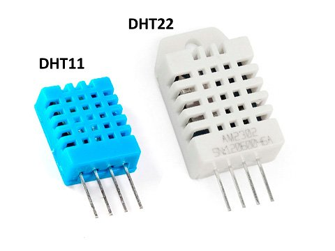
【Deskripsi】 Sensor digital yang mengukur suhu dan kelembapan relatif udara menggunakan thermistor dan capacitive humidity sensor. Data dikirim dalam format digital 1-Wire.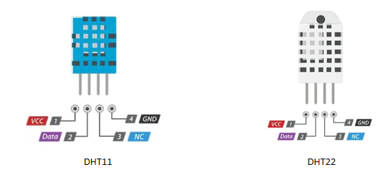
【Contoh Penggunaan】 Membuat termometer ruangan, sistem kontrol otomatis kipas angin jika suhu di atas 30°C, atau stasiun cuaca mini. (DHT22 untuk akurasi lebih tinggi).
【Pinout & Interface】 VCC (3.3-5V), GND, DATA (Digital). Membutuhkan resistor pull-up 4.7kΩ. Interface: 1-Wire. - DS18B20 (Waterproof):
【Gambar Sensor】【Skematik Wiring】 【Deskripsi】 Sensor suhu digital dengan akurasi tinggi (±0.5°C). Varian waterproof-nya dilindungi selubung stainless steel, cocok untuk cairan. Setiap chip memiliki alamat unik (ROM).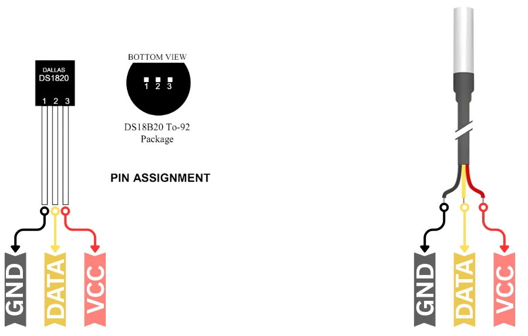
【Contoh Penggunaan】 Sistem pemantau suhu kolam renang, sensor suhu air radiator di mobil, atau kontrol suhu akuarium. Bisa dipasang puluhan sensor dalam 1 kabel.
【Pinout & Interface】 VCC (3.3-5V), GND, DQ (Data). Membutuhkan resistor pull-up 4.7kΩ. Interface: 1-Wire. - LM35:
【Gambar Sensor】【Skematik Wiring】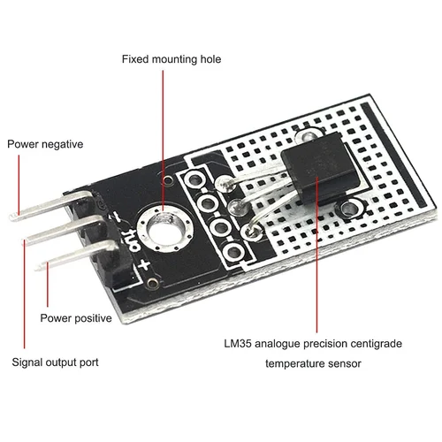
【Deskripsi】 Sensor suhu analog murah dan mudah digunakan. Output tegangannya linier: 10mV per 1°C (0°C = 0V, 25°C = 250mV).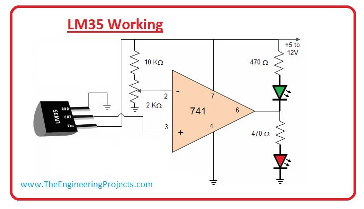
【Contoh Penggunaan】 Projek IoT pemula, indikator suhu ruangan berbasis LED (misal, nyalakan LED merah jika suhu > 30°C).
【Pinout & Interface】 VCC (4-30V), GND, VOUT (Analog). Interface: Analog (ADC). - BMP280 / BME280:
【Gambar Sensor】【Skematik Wiring】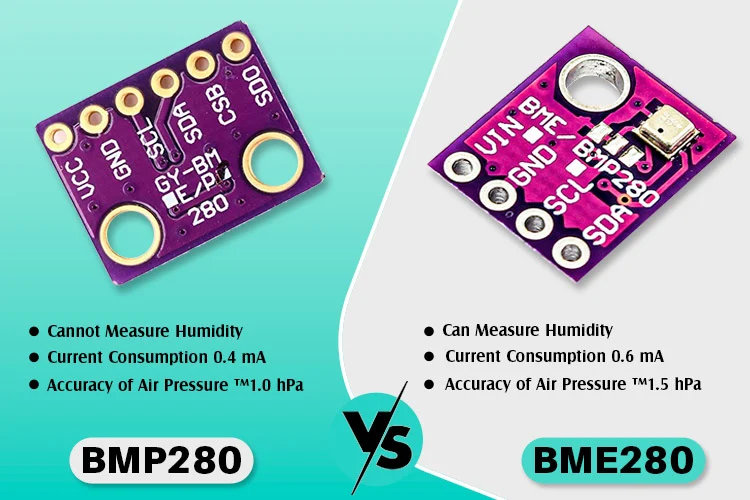
【Deskripsi】 Sensor presisi tinggi untuk tekanan atmosfer, suhu, dan (khusus BME280) kelembapan. Sering digunakan untuk menentukan ketinggian tempat (altimeter).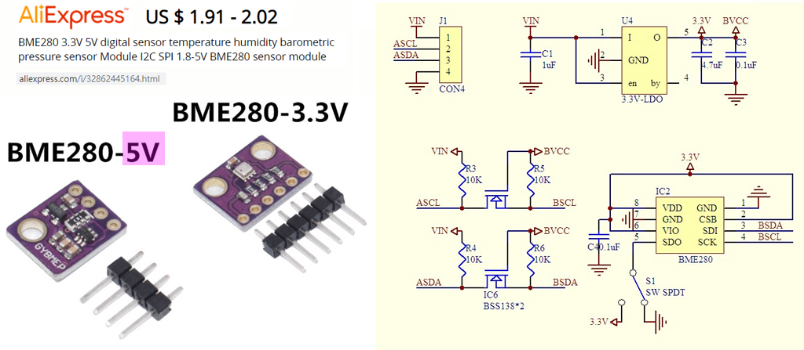
【Contoh Penggunaan】 Stasiun cuaca IoT, pelacak ketinggian drone untuk menjaga kestabilan terbang (hold altitude).
【Pinout & Interface】 VCC (3.3V), GND, SDA/SCL (I2C) atau MOSI/MISO/SCK/CS (SPI). Interface: I2C / SPI. - YL-69 (Kelembapan Tanah):
【Gambar Sensor】【Deskripsi】 Mengukur konduktivitas listrik tanah. Semakin basah tanah, semakin kecil hambatannya (nilai analog semakin besar).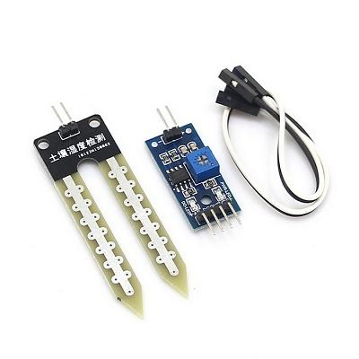
【Contoh Penggunaan】 Sistem penyiraman tanaman otomatis (jika tanah kering, pompa air menyala), monitoring hidroponik.
【Pinout & Interface】 VCC (3.3-5V), GND, AO (Analog) & DO (Digital). Interface: Analog atau Digital (dengan trimpot). - Raindrops / Water Level Sensor:
【Gambar Sensor】【Deskripsi】 Raindrops mendeteksi tetesan air hujan di papan PCB. Water level menggunakan serangkaian elektroda untuk mendeteksi ketinggian air.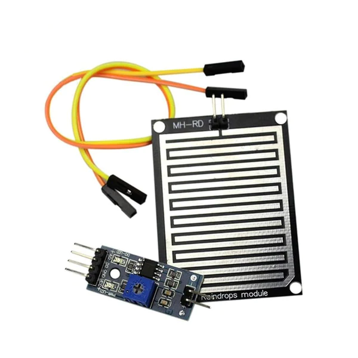
【Contoh Penggunaan】 Alarm hujan otomatis (menutup jemuran), pompa penguras air saat banjir, indikator tangki penuh.
【Pinout & Interface】 VCC (3.3-5V), GND, AO (Analog), DO (Digital).
📏 B. Sensor Jarak & Gerak
- HC-SR04 (Ultrasonik):
【Gambar Sensor】【Deskripsi】 Memancarkan gelombang suara ultrasonik dan mengukur waktu pantulan (echo) untuk menghitung jarak. Prinsipnya seperti kelelawar.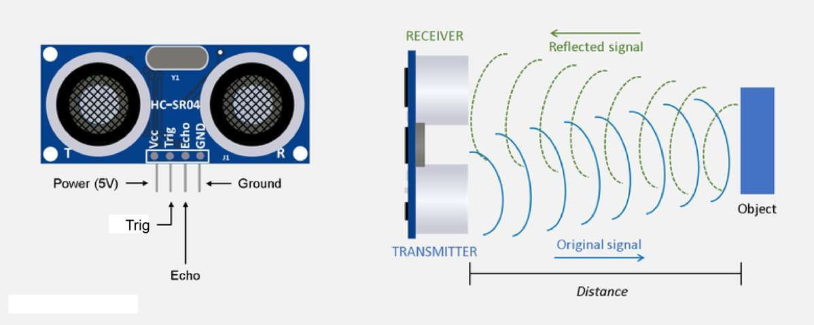
【Contoh Penggunaan】 Robot penghindar rintangan (obstacle avoidance), pengukur jarak parkir mobil, atau pengukur volume air di tangki.
【Pinout & Interface】 VCC (5V), GND, TRIG, ECHO. Interface: Digital (Pulse). ⚠️ Jika memakai ESP32, ECHO harus diturunkan tegangannya (voltage divider). - HC-SR501 (PIR Motion):
【Gambar Sensor】【Skematik Wiring】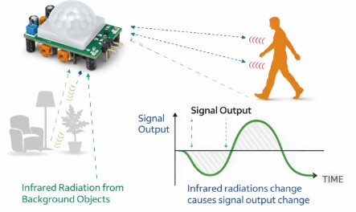
【Deskripsi】 Mendeteksi perubahan radiasi inframerah (panas) dari tubuh manusia atau hewan yang bergerak.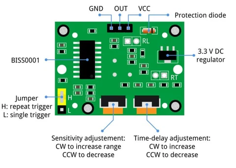
【Contoh Penggunaan】 Lampu otomatis menyala saat ada orang masuk ruangan, sistem keamanan pendeteksi pencuri, atau penyemprot hand sanitizer otomatis.
【Pinout & Interface】 VCC (5V), GND, OUT (Digital). Interface: Digital. (Ada trimpot untuk sensitivitas dan durasi). - IR Obstacle / TCRT5000:
【Gambar Sensor】【Deskripsi】 Memancarkan sinar inframerah dan membaca intensitas pantulannya. Benda gelap menyerap IR (nilai rendah), benda terang memantulkan IR (nilai tinggi).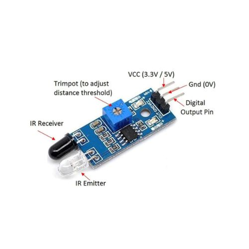
【Contoh Penggunaan】 Robot Line Follower (membaca garis hitam di atas lantai putih), robot penghindar rintangan jarak dekat.
【Pinout & Interface】 VCC (3.3-5V), GND, OUT (Digital/Analog). Interface: Digital/Analog. - VL53L0X (ToF Laser):
【Gambar Sensor】【Skematik Wiring】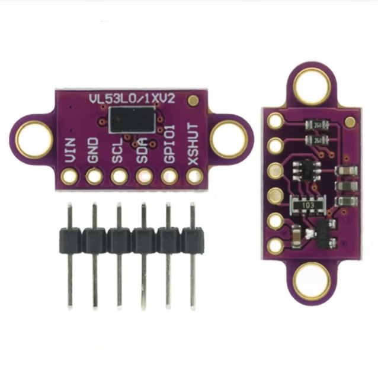
【Deskripsi】 Menggunakan teknologi Time-of-Flight (laser). Mengukur waktu tempuh pulsa cahaya mengenai objek dan kembali. Akurasi sangat tinggi (milimeter).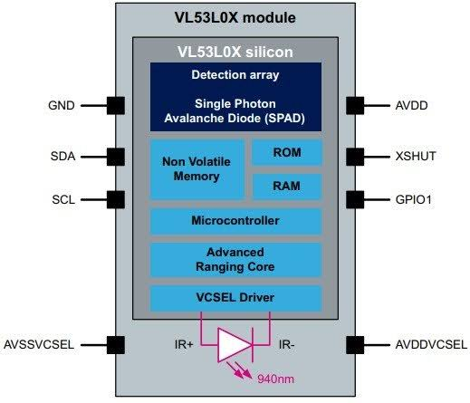
【Contoh Penggunaan】 Drone pengukur ketinggian saat landing, deteksi gesture tangan tanpa sentuh (touchless control).
【Pinout & Interface】 VCC (3.3V), GND, SDA/SCL (I2C). Interface: I2C.
💨 C. Sensor Gas & Kualitas Udara (Seri MQ)
- MQ-2 (LPG/Asap) / MQ-7 (CO) / MQ-135 (Udara) / MQ-4 (Metana):
【Gambar Sensor】【Skematik Wiring】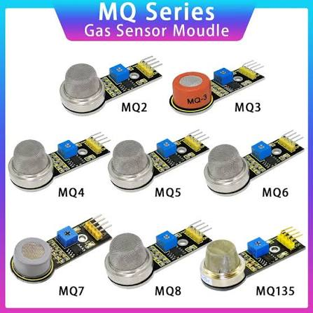
【Deskripsi】 Sensor dengan heater internal yang memanaskan elemen tin dioxide. Ketika bertemu dengan gas target, konduktivitasnya berubah (nilai analog berubah).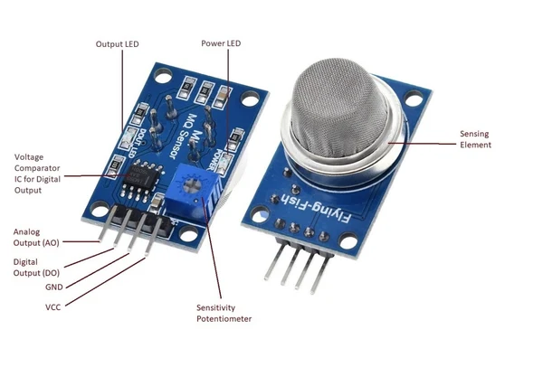
【Contoh Penggunaan】 MQ-2: Detektor kebocoran gas kompor (LPG) dan alarm asap rokok. MQ-135: Pemantau kualitas udara di dalam ruangan.
【Pinout & Interface】 VCC (5V), GND, AO (Analog), DO (Digital). Interface: Analog & Digital. Membutuhkan waktu warm-up (30 detik) dan sumber daya 200mA.
👁️ D. Sensor Cahaya & Warna
- LDR Module:
【Gambar Sensor】【Skematik Wiring】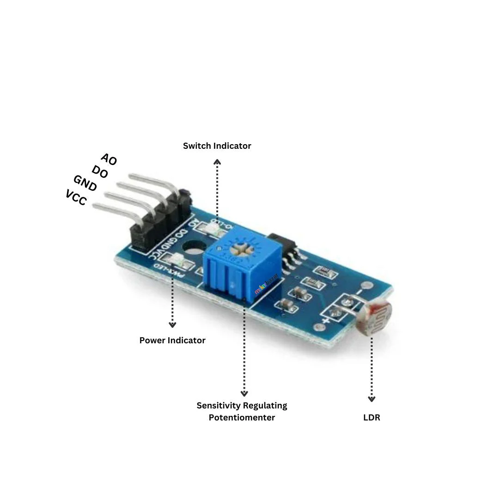
【Deskripsi】 Light Dependent Resistor. Hambatan akan turun drastis saat terkena cahaya. Pin DO menggunakan komparator (LM393) untuk menghasilkan output HIGH/LOW.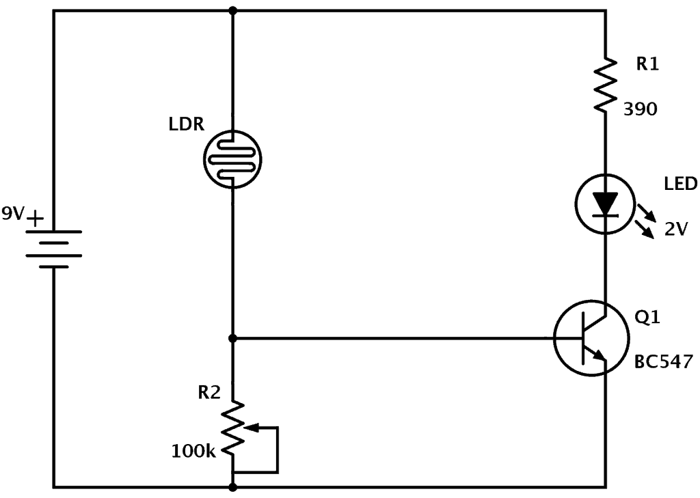
【Contoh Penggunaan】 Lampu jalan otomatis (menyala saat malam), sensor untuk mengatur kecerahan layar LCD secara otomatis.
【Pinout & Interface】 VCC (3.3-5V), GND, AO, DO. Interface: Analog & Digital. - BH1750 (Digital Light):
【Gambar Sensor】【Skematik Wiring】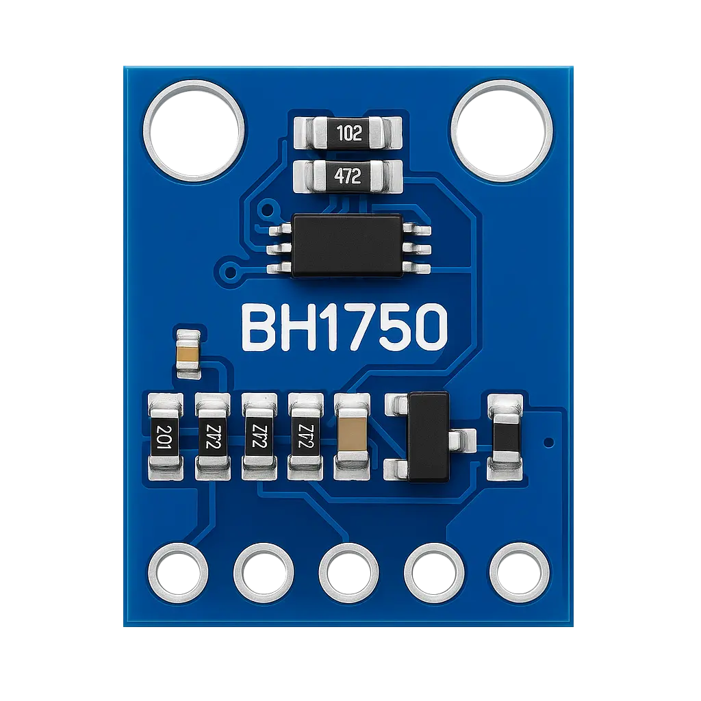
【Deskripsi】 Sensor intensitas cahaya digital menggunakan komunikasi I2C. Outputnya langsung berupa satuan Lux (lx) yang standar, bukan ADC mentah.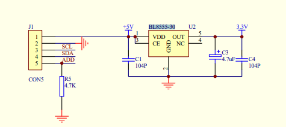
【Contoh Penggunaan】 Monitoring rumah kaca (tanaman butuh intensitas cahaya tertentu), pengatur lampu akuarium sesuai matahari.
【Pinout & Interface】 VCC (3.3-5V), GND, SDA/SCL (I2C), ADDR (I2C address). Interface: I2C. - TCS3200 / TCS34725 (Color Sensor):
【Gambar Sensor TCS34725】【Gambar Sensor TCS3200】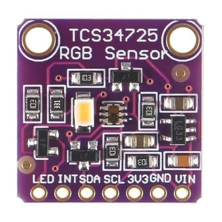
【Skematik Wiring TCS3200】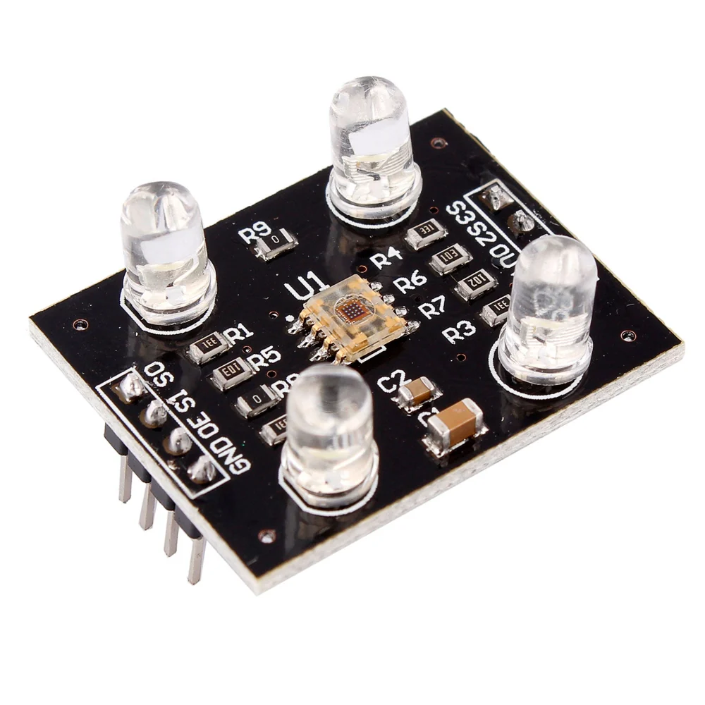
【Deskripsi】 Mampu membedakan komponen warna Red, Green, dan Blue (RGB) dari sebuah objek menggunakan filter warna.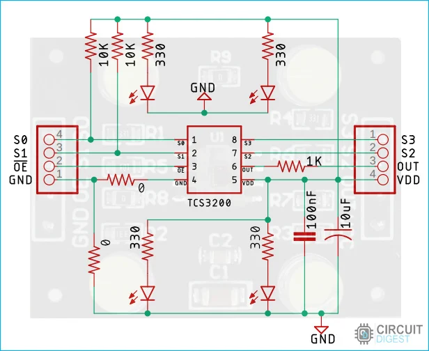
【Contoh Penggunaan】 Mesin sortir barang berdasarkan warna, robot pendeteksi bola warna-warni, atau pengenalan warna lampu lalu lintas.
【Pinout & Interface】 TCS34725: VCC (3.3V), GND, SDA/SCL (I2C). TCS3200: Output Frekuensi/Pulse. Interface: I2C / Pulse. - Flame Sensor (Api):
【Gambar Sensor】【Gambar Flame Sensor Paralel】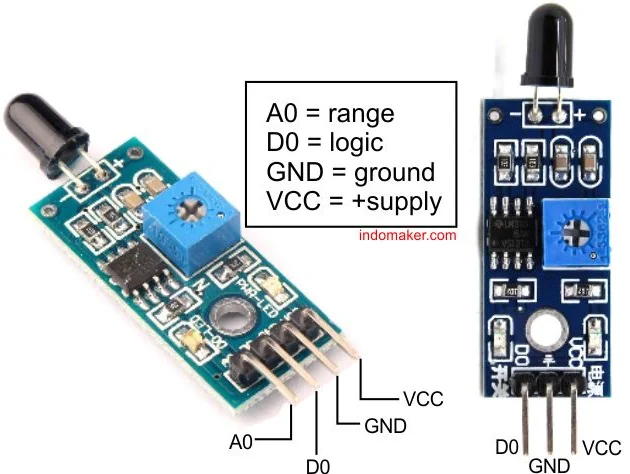
【Skematik Wiring】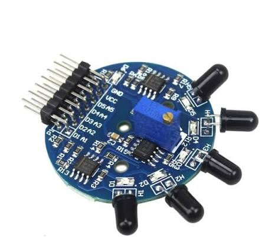
【Deskripsi】 Mendeteksi radiasi inframerah yang dihasilkan oleh nyala api. Output analog menunjukkan intensitas api.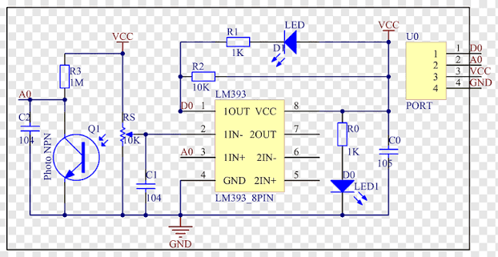
【Contoh Penggunaan】 Robot pemadam kebakaran, alarm kebakaran dini, sistem shut-off otomatis kompor gas.
【Pinout & Interface】 VCC (3.3-5V), GND, AO, DO. Interface: Analog & Digital. (Hindari sinar matahari langsung karena sensitif IR).
🧭 E. Sensor Kecepatan, Orientasi, & Getaran
- MPU6050 (Gyro & Accelerometer):
【Gambar Sensor】【Skematik Wiring】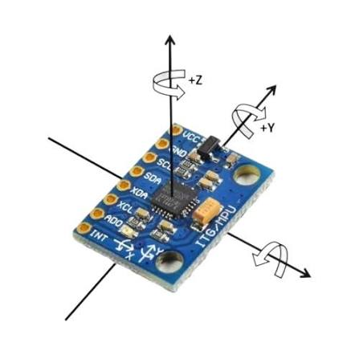
【Deskripsi】 Sensor 6-axis. Accelerometer mendeteksi percepatan/gravitasi, Gyroscope mendeteksi kecepatan sudut. Kombinasinya dapat menentukan orientasi 3D (Roll, Pitch, Yaw).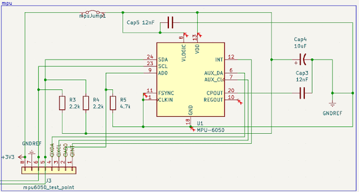
【Contoh Penggunaan】 Pengendali drone (auto-leveling), robot balancing (self-balancing robot), sensor kemiringan untuk game controller.
【Pinout & Interface】 VCC (3.3V!), GND, SDA/SCL (I2C), AD0, INT. Interface: I2C. ⚠️ Jangan gunakan 5V tanpa regulator! - SW-420 (Vibration):
【Gambar Sensor】【Skematik Wiring】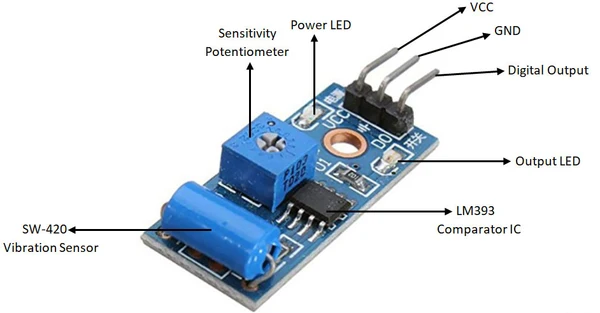
【Deskripsi】 Menggunakan bola logam di dalam tabung. Saat terjadi getaran, bola bergerak dan menyentuh kontak, mengubah output dari HIGH ke LOW.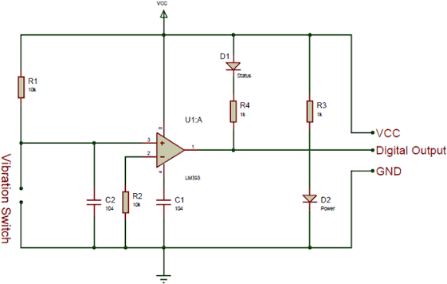
【Contoh Penggunaan】 Alarm anti-maling (jika lemari digoyang), deteksi gempa bumi mini.
【Pinout & Interface】 VCC (3.3-5V), GND, DO (Digital). Interface: Digital. - Speed Sensor (LM393 + Wheel):
【Gambar Sensor】【Gambar Sensor dan Encoder Disk】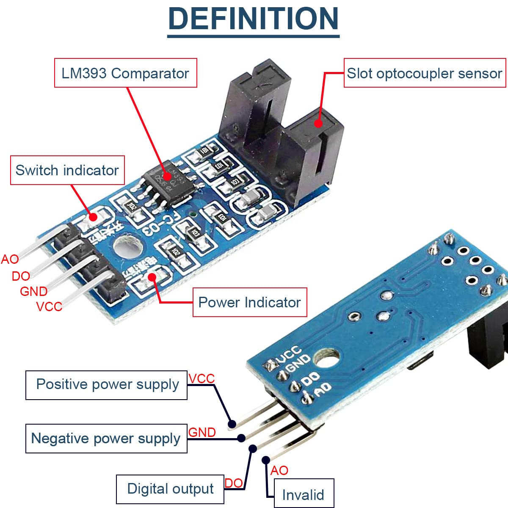
【Skematik Wiring】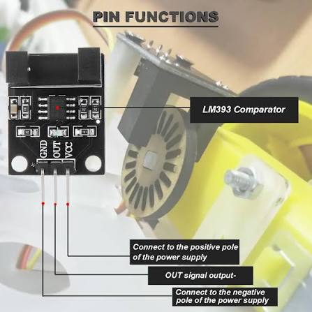
【Deskripsi】 Sensor celah optik. Saat celah melewati cahaya (atau terhalang), output berubah HIGH/LOW. Dengan menghitung pulsa, kita tahu RPM.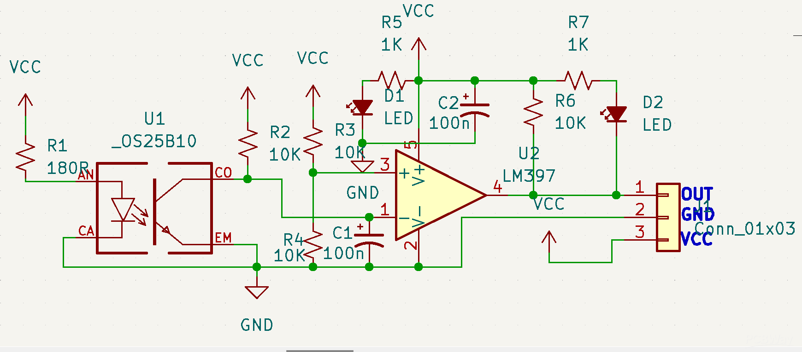
【Contoh Penggunaan】 Menghitung kecepatan robot (odometry), tachometer untuk mobil mainan.
【Pinout & Interface】 VCC (3.3-5V), GND, AO, DO. Interface: Digital (Pulse).
🩸 F. Sensor Biometrik & Medis
- MAX30100 / MAX30102 (Heart Rate & Oximeter):
【Gambar Sensor】【Skematik Wiring】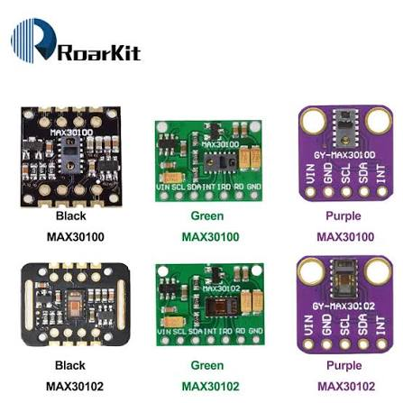
【Deskripsi】 Menggunakan LED merah dan IR untuk mengukur absorbansi cahaya oleh darah. Dengan algoritma, ia bisa menghitung BPM (detak jantung) dan SpO2 (kadar oksigen).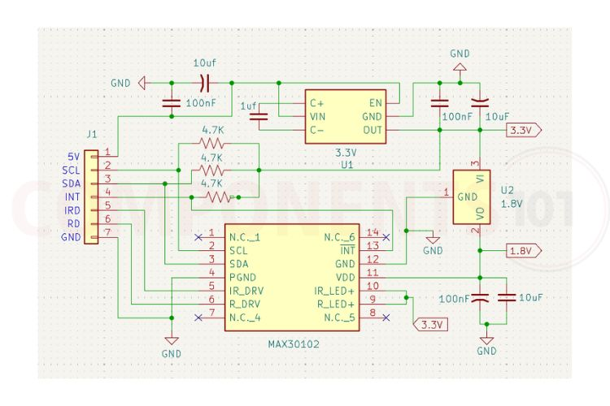
【Contoh Penggunaan】 Gelang kesehatan, monitor pasien rumah sakit, alat deteksi kelelahan pengemudi.
【Pinout & Interface】 VCC (1.8V/3.3V - hati-hati), GND, SDA/SCL (I2C), INT. Interface: I2C. - Pulse Sensor:
【Gambar Sensor】【Skematik Wiring】【Deskripsi】 Sensor analog plug-and-play yang menempel di jari. Mendeteksi detak jantung melalui perubahan volume darah di jaringan kapiler.
【Contoh Penggunaan】 Projek deteksi detak jantung untuk pemula, sistem latihan olahraga.
【Pinout & Interface】 VCC (3.3-5V), GND, OUT (Analog). Interface: Analog (ADC). - AS608 / R307 (Fingerprint):
【Gambar Sensor】【Gambar Board Sensor】 【Gambar Capture Sensor】【Gambar R503 Sensor】【Gambar R302 Sensor】【Skematik Wiring Pinout R302】【Deskripsi】 Modul pemindai sidik jari yang menyimpan data citra sidik jari di memori internalnya. Komunikasi dengan mikrokontroler menggunakan UART serial.
【Gambar Capture Sensor】【Gambar R503 Sensor】【Gambar R302 Sensor】【Skematik Wiring Pinout R302】【Deskripsi】 Modul pemindai sidik jari yang menyimpan data citra sidik jari di memori internalnya. Komunikasi dengan mikrokontroler menggunakan UART serial.
【Contoh Penggunaan】 Kunci pintu digital biometrik, absensi pegawai, kotak aman uang.
【Pinout & Interface】 VCC (3.3-5V), GND, TX, RX (UART). Interface: UART (Serial). (TX modul ke RX Arduino, dan sebaliknya).
🔐 G. Sensor Otentikasi & Kontak
- RC522 (RFID):
【Gambar Sensor】【Gambar RFID Tag/Card】【Gambar RFID Chip】【Deskripsi】 Membaca data dari kartu atau tag RFID menggunakan gelombang radio 13.56 MHz. Komunikasi dengan mikrokontroler menggunakan SPI.
【Contoh Penggunaan】 Sistem absensi berbasis kartu, kunci pintu dengan RFID tag, pengisian saldo e-money mini.
【Pinout & Interface】 VCC (3.3V), GND, SDA (CS), SCK, MOSI, MISO, RST. Interface: SPI. ⚠️ Pastikan tegangan VCC 3.3V! - Ky-003 (Hall Effect):
【Gambar Sensor】【Skematik Wiring】【Deskripsi】 Sensor yang merespons medan magnet. Saat didekatkan dengan magnet (kutub selatan), outputnya akan berubah (biasanya LOW).
【Contoh Penggunaan】 Penghitung putaran motor (dengan menempelkan magnet di roda), sensor pintu kulkas terbuka (dengan magnet di pintu).
【Pinout & Interface】 VCC (3.3-5V), GND, OUT (Digital). Interface: Digital. - MC-38 (Reed Switch / Pintu):
【Gambar Sensor】【Skematik Wiring】【Deskripsi】 Saklar magnetik (reed switch). Dua lempeng logam di dalam tabung akan tertarik dan menyatu jika didekatkan dengan magnet (saklar menutup).
【Contoh Penggunaan】 Sensor pintu/jendela terbuka untuk sistem alarm rumah, sensor tutup botol/ember.
【Pinout & Interface】 2 kabel (NO/NC). Interface: Digital (Switch). Gunakan modeINPUT_PULLUPpada Arduino.
BAB III Dasar Pemrograman
1. Algoritma
Algoritma adalah cara atau langkah-langkah logis untuk memecahkan suatu masalah. Istilah ini berasal dari ilmuwan muslim Al-Kwarizmi.
Langkah: Tuang A → C, lalu B → A, lalu C → B. Selesai! Itu algoritma.
2. Variable
Variable adalah tempat menyimpan data di dalam program. Data bisa berupa angka, teks, atau nilai logika.
3. Tipe Data
- char: satu karakter (huruf/angka/simbol). Contoh:
char huruf = 'A'; - String: kumpulan karakter. Contoh:
String pesan = "Halo"; - int: bilangan bulat. Contoh:
int angka = 10; - float: bilangan desimal. Contoh:
float nilai = 3.14; - bool: nilai benar/salah. Contoh:
bool selesai = false; - Array: kumpulan data dengan tipe yang sama. Contoh:
int pin[] = {2, 4, 8, 3, 6};
4. Function
Function (fungsi) adalah blok kode yang bisa dipanggil berulang kali. Membuat program lebih terstruktur dan mudah diperbaiki.
5. Array
Array adalah struktur data untuk menyimpan banyak nilai dengan tipe data yang sama dalam satu variabel. Indeks dimulai dari 0.
6. Extension & Catatan Penting
Extension adalah penamaan file sesuai bahasa pemrograman: PHP (.php), JavaScript (.js), Python (.py), C++ (.cpp).
- Setiap bahasa punya variable.
- Setiap bahasa punya tipe data (beda-beda).
- Setiap bahasa punya function.
- Cara deklarasi function berbeda antar bahasa.
7. Pemrograman Mikrokontroler
Mikrokontroler Arduino, ESP8266, dan ESP32 dapat diprogram dengan C++ dan Python (ESP via MicroPython). Dalam pembelajaran ini, kita fokus pada C++ karena ketiga board tersebut mendukungnya.
Belajar Robotika & IOT — Muwatok Project
Made with love by Muwatok Project